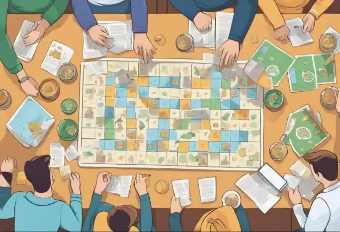
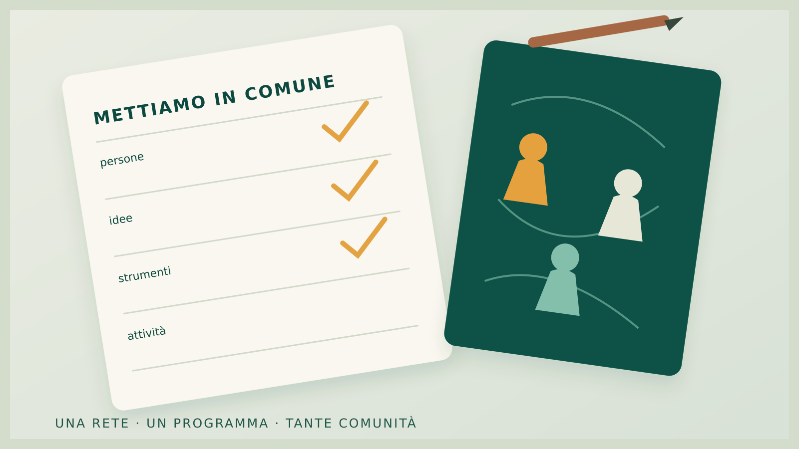

Il 31 ottobre ci incontriamo: al via il kick-off meeting di Gioco di Squadra
Dopo il finanziamento, è il momento di mettersi al lavoro insieme. Sabato 31 ottobre la rete di Gioco di Squadra – Metodologie ludiche per il sociale si riunisce a Pieve di Compito, nel comune di Capannori (LU), per dare avvio alla programmazione operativa del progetto.

Il progetto coordinato da Federludo APS entra nella sua fase operativa. Al kick-off meeting parteciperanno i rappresentanti delle organizzazioni partner: non sarà soltanto una presentazione, ma una mattinata di lavoro per mettere a punto l'organizzazione comune, definire responsabilità e costruire una programmazione condivisa delle attività da realizzare nei territori toscani.
Il progetto nasce dalla collaborazione fra Federludo, dieci associazioni partner e una rete di sostenitori, con l'obiettivo di utilizzare il gioco come strumento di inclusione, partecipazione e sviluppo delle relazioni di comunità. Il 31 ottobre sarà l'occasione per tradurre questo quadro in decisioni, strumenti e primi passi concreti.

Il programma della mattinata
Arrivo dei partecipanti e apertura dell'incontro.
Insediamento della rete e definizione del programma di lavoro attraverso quattro temi principali.
Governance e organizzazione
Comitato di Coordinamento, referenti delle organizzazioni e compiti per il lavoro comune.
Budget e rendicontazione
Quadro economico definitivo, risorse per le attività e procedure amministrative condivise.
Attività e calendario
Confronto sui percorsi territoriali, sulle priorità e sulle date, per arrivare a una programmazione esecutiva.
Sito web e comunicazione
Come raccontare le iniziative, aggiornare il calendario e documentare il lavoro nei diversi territori.
Un'occasione per conoscersi e fare squadra
Al termine della sessione, Federludo offrirà ai partecipanti un pranzo a buffet presso l'agriturismo. Sarà anche un momento informale per incontrarsi, scambiare idee e realizzare le prime fotografie del partenariato.

Informazioni e partecipazione
L'incontro operativo è rivolto alle organizzazioni partner convocate da Federludo. I sostenitori riceveranno un invito separato per la presentazione delle attività e il momento inaugurale; le decisioni organizzative e finanziarie restano di competenza del partenariato.
Per confermare la partecipazione, i rappresentanti delle organizzazioni invitate possono scrivere a giocodisquadra@federludo.it, indicando i nominativi dei presenti.
Il progetto Gioco di Squadra è finanziato dalla Regione Toscana nell'ambito dell'Avviso pubblico sociale 2026, con risorse del Ministero del Lavoro e delle Politiche Sociali.